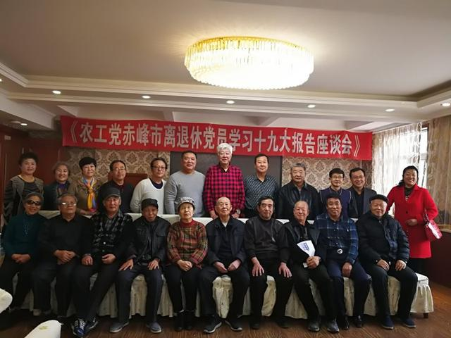
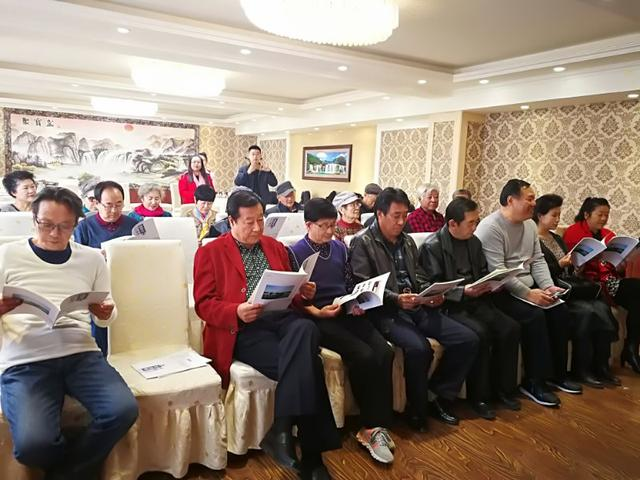
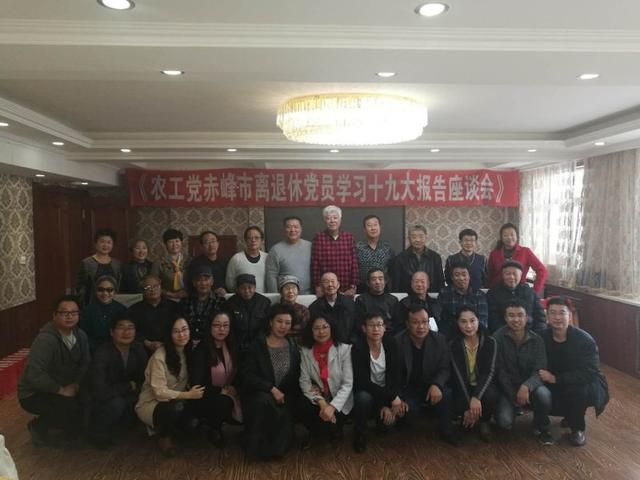

10月28日，农工党赤峰市委组织召开退休老党员学习十九大报告座谈会，老党员们说体会、谈感悟，现场氛围轻松而热烈。座谈会由农工党赤峰市委副主委隗春华主持，农工党赤峰市委退休老党员共36人参加了座谈。

会议传达学习了习近平总书记在十九大上所作题目为《决胜全面建成小康社会，夺取新时代中国特色社会主义伟大胜利》的工作报告以及农工党中央主席陈竺现场聆听习近平总书记报告的感受。老党员们分享了各自的切身体会和对会议精神的理解与把握，表达了学习贯彻大会精神的决心。

会议强调，农工党赤峰市委要把学习宣传贯彻党的十九大精神，作为当前和今后一个时期重要的政治任务，组织引领全体党员迅速掀起学习宣传贯彻热潮。要坚持以党的十九大精神为指引，用习近平新时代中国特色社会主义思想武装头脑，进一步坚定政治立场，为党和国家加油鼓劲，为事业发展点赞喝彩，为工作大局凝心聚力，为全面建成小康社会、为实现中华民族的伟大复兴作出新的更大贡献。